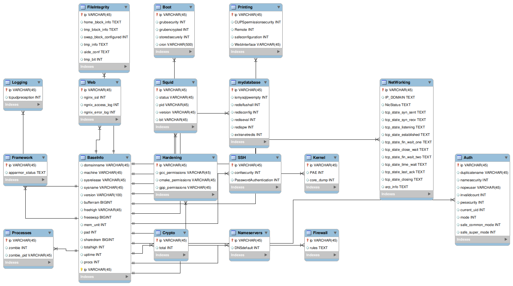

数据库
ER图

数据库信息
BaseInfo
| 字段名 | 描述 |
|---|---|
| domainname | 域名 |
| machine | cpu架构 |
| sysrelease | 系统版本 |
| sysname | 系统名 |
| version | 系统版本 |
| bufferram | 缓冲区大小 |
| freehigh | 可用的高内存大小 |
| freeswap | 还可用的交换区大小 |
| mem_unit | 内存单元大小 |
| pad | |
| sharedram | 共享的存储器的大小 |
| totalhigh | 高内存大小 |
| uptime | |
| procs | 当前进程数目 |
| ip | ip地址(需定义网卡) |
Auth
| 字段名 | 描述 |
|---|---|
| ip | ip地址 |
| duplicatename | 重复的用户名 |
| namesecurity | 用户名是否安全 |
| nopwuser | 无密码的用户 |
| invalidcount | 无密码用户数量 |
| pwsecurity | 所有用户是否都有密码 |
| current_uid | 当前用户uid |
| mode | 当前环境umask |
| safe_common_mode | 普通用户umask是否安全 |
| safe_super_mode | 超级用户umask是否安全 |
Boot
| 字段名 | 描述 |
|---|---|
| ip | ip地址 |
| grubsecurity | grub是否安全初始化 |
| grubencrypted | grub是否加密 |
| storedsecurely | grub是否安全存储 |
| cron | 计划任务列表 |
Crypto
| 字段名 | 描述 |
|---|---|
| ip | ip地址 |
| total | 过期的证书数量 |
Printing
| 字段名 | 描述 |
|---|---|
| ip | ip地址 |
| CUPSpermissionsecurity | CUPS权限是否安全 |
| Remote | CUPS是否开启远程 |
| safeconfiguration | CUPS配置是否安全 |
| WebInterface | 网络接口 |
Logging
| 字段名 | 描述 |
|---|---|
| ip | ip地址 |
| tcpudpreception | 是否开启tcp，udp接收 |
Nameservers
| 字段名 | 描述 |
|---|---|
| ip | ip地址 |
| DNSdefault | DNS是否是默认值 |
SSH
| 字段名 | 描述 |
|---|---|
| ip | ip地址 |
| confsecurity | 配置文件权限是否安全 |
| PasswordAuthentication | 是否开启密码认证 |
Processes
| 字段名 | 描述 |
|---|---|
| ip | ip地址 |
| zombie | 是否有僵尸进程 |
| zombie_pid | 僵尸进程pid |
Web
| 字段名 | 描述 |
|---|---|
| ip | ip地址 |
| nginx_ssl | 判断nginx ssl是否开启 |
| ngnix_access_log | 判断ngnix_access_log是否开启 |
| ngnix_error_log | 判断ngnix_error_log是否开启 |
Kernel
| 字段名 | 描述 |
|---|---|
| ip | ip地址 |
| PAE | 判断PAE补丁是否安装 |
| core_dump | 是否开启core dump |
NetWorking
| 字段名 | 描述 |
|---|---|
| ip | ip地址 |
| IP-DOMAIN | IP-DOMAIN |
| NicStatus | |
| tcp-state-syn_sent | |
| tcp-state-syn_reNetWorkingcv | |
| tcp-state-listening | |
| tcp-state-established | |
| tcp-state-fin-wait-1 | |
| tcp-state-close-wait | |
| tcp-state-fin-wait-2 | |
| tcp-state-time-wait | |
| tcp-state-last-ack | |
| tcp-state-closing | |
| arp-info |
FileIntegrity
| 字段名 | 描述 |
|---|---|
| ip | ip地址 |
| home_block_info | |
| tmp_block_info | |
| swap_block_configured | |
| tmp_info | |
| tmp_bit |
Framework
| 字段名 | 描述 |
|---|---|
| ip | ip地址 |
| apparmor_status |
Firewall
| 字段名 | 描述 |
|---|---|
| ip | ip地址 |
| rules | iptables规则 |
Hardening
| 字段名 | 描述 |
|---|---|
| ip | ip地址 |
| gcc_permissions | |
| gpp_permissions | |
| cmake_permissions |
Squid
| 字段名 | 描述 |
|---|---|
| ip | ip地址 |
| status | |
| pid | |
| version | |
| bit |